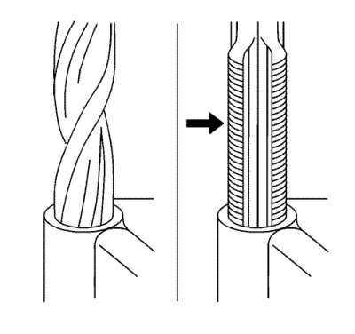
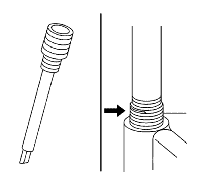

Reparación de roscas
Hay disponibles comercialmente juegos de reparación de roscas para propósitos generales.
Advertencia: Consulte Advertencia, protección ocular en la sección Prólogo.

Nota: consulte las indicaciones del fabricante del juego de reparación de roscas relativas al tamaño del macho de roscar y del taladro que se deben utilizar.
Evite siempre la acumulación de virutas Retire hacia afuera el macho de roscar cada pocas vueltas y quite las virutas.
- Determine el tamaño, el paso de rosca y la profundidad de la rosca dañada.
- Ajuste los collarines de tope en la herramienta de corte como sea necesario. Enrosque los collarines de tope hasta la profundidad necesaria.
- Extraiga la rosca dañada.
- Retire las virutas.
- Aplique aceite de motor limpio en la rosca superior.
- Utilice el macho de roscar para cortar una nueva rosca.
- Limpie la rosca.

- Atornille el suplemento de rosca en el mandril del instalador de suplementos de roscas. Enganche la espiga del suplemento de rosca en el extremo del mandril.
Nota: El suplemento de rosca debe estar embutido una vuelta por debajo de la superficie.
- Lubrique el suplemento de rosca con aceite de motor limpio, menos cuando monte en aluminio, y coloque el suplemento de rosca.
- Si la lengüeta del suplemento de rosca no se rompe al extraer el instalador de suplementos de rosca, rómpala utilizando un punzón.
| © Copyright Chevrolet. All rights reserved |